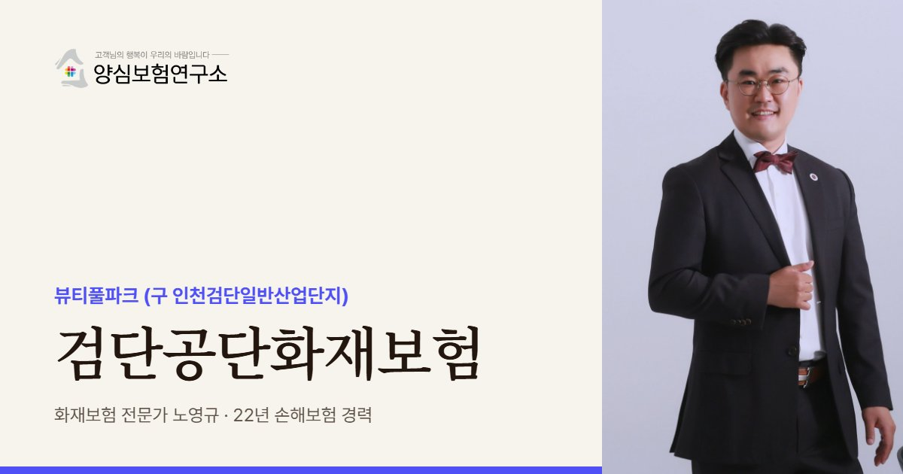

검단공단화재보험은 인천 검단구 오류동 뷰티풀파크 입주 공장의 화재 재산 손해와 이웃 배상책임에 대비하는 보험입니다. 화학·화장품과 금속가공 공장이 이웃해 원료 보관과 연기 피해를 함께 봅니다. 검단구 출범으로 바뀐 주소를 증권에 반영해 두는 것이 좋습니다.
검단공단화재보험 보장 항목
- 화학·화장품 설비: 원료·용제·에탄올을 다루는 오류동 화장품·화학 공정 설비와 재고
- 화재배상책임: 오류동 화장품 공장 사례처럼 6개 동 이상 번지는 공장 밀집 구역 연소 피해
- 연기 오염 손해: 이웃 공장 화재의 검은 연기로 오염된 재고 (담보 구성 확인)
- 제3자 배상: 산단 쪽으로 다가오는 검단신도시 주거지까지 닿는 연기 피해
검단공단화재보험 보험료 산정 기준과 가입 시 고려사항
- 증권 주소: 2026년 7월 서구에서 분구된 검단구 기준의 새 소재지 주소 반영
- 원료·용제 보관: 화장품·화학 원료와 용제, 에탄올의 종류·보관량에 따른 인수 조건
- 이전 공장 조건: 다른 곳에서 옮겨 온 공장의 새 소재지·건물 조건 (예전 증권 그대로 사용 곤란)
- 배상 한도: 여러 동으로 번지는 상황과 주거지 확대를 가정해 점검하는 한도

검단공단은 여러 곳에서 옮겨 온 중소 공장이 한 단지에 모인 곳이라 공장마다 사정이 제각각입니다. 일산 사무실에서 가까운 노영규 대표가 직접 찾아가 공장별로 확인합니다.
검단공단 안내
검단공단, 왜 공장화재보험이 중요할까요?
검단공단화재보험은 인천 검단구 오류동의 뷰티풀파크(구 인천검단일반산업단지)에 입주한 공장이 화재로 입는 재산 손해와 이웃 공장에 대한 배상책임을 대비하는 보험으로, 산단의 특성을 반영해 설계합니다. 검단공단은 검단신도시 등 공공사업으로 밀려난 공장의 이전 부지로 2006년 지정돼 2014년 조성을 마쳤고, 2022년 뷰티풀파크로 이름을 바꿨습니다.
2026년 1분기 기준 1,299개사가 입주해 있고, 허용 업종은 화학, 1차금속, 금속가공, 기계 등 제조업 25개 분야입니다. 여러 지역에서 옮겨 온 중소 공장이 한곳에 모인 이전 단지라 업종과 공장 규모가 다양하고, 화학 원료를 쓰는 공장과 금속가공 공장이 이웃하는 경우가 많습니다.
2026년 7월 서구에서 분구된 검단구가 출범하면서 주소 표기가 바뀌었습니다. 보험 증권의 소재지 주소가 예전 서구 주소로 남아 있다면 갱신 때 새 주소로 정리해 두는 것이 좋습니다. 사고 뒤 소재지 확인 과정에서 불필요한 절차를 줄일 수 있습니다.
2026년 9월 23일 밤 오류동의 화장품 제조공장에서 난 불은 16시간 만에 완전히 꺼졌고, 인근 공장으로 번져 6개 동 이상이 피해를 입었습니다. 검은 연기가 서울 서남부까지 퍼질 만큼 큰 화재였습니다. 기사에 산단 이름이 명시되지 않아 단지 경계 안인지는 확인이 필요하지만, 오류동 공장 밀집 구역에서 한 공장의 불이 이웃 여러 동으로 번질 수 있음을 보여 줬습니다.
검단공단은 검단신도시와 가까워 주거지가 점점 산단 쪽으로 다가오고 있습니다. 연기가 멀리 퍼진 2026년 9월 화재처럼 대형 화재의 영향이 산단 밖까지 닿을 수 있으므로, 공장 재산 보험과 함께 제3자 배상 한도를 주거지 확대에 맞춰 점검할 필요가 있습니다.
2026.09 오류동 화장품 제조공장 화재가 16시간 만에 진화됐고 인근 공장 6개 동 이상이 피해를 입었습니다(대응 1단계, 인명피해 없음). 산단 경계 안인지는 기사에 명시되지 않았습니다. (인천일보, 서울신문)
주요 위험
검단공단 공장 화재보험에서 먼저 볼 위험은 무엇인가요?
화학·화장품 공정
원료와 용제, 에탄올을 다루는 공정은 연소가 빠르고 연기 피해가 큽니다.
여러 동으로 번지는 불
공장이 촘촘한 구역은 6개 동 이상 번지는 상황을 전제로 배상 한도를 봅니다.
금속가공 공정
용접·절단 불티와 절삭유가 이웃 화학 공장과 만나면 위험이 커집니다.
바뀐 주소 표기
검단구 출범으로 바뀐 주소를 증권에 반영해 두면 사고 뒤 절차가 수월합니다.
연기 확산 피해
대량의 검은 연기는 주변 공장 재고와 주민 피해로 이어질 수 있습니다.
이전 공장의 다양성
업종과 규모가 제각각이라 이웃 공장의 업종을 알아 두는 것이 위험 판단의 출발입니다.
※ 실제 보장 여부와 한도, 면책 사항은 가입하는 상품의 약관과 공장 현황에 따라 달라집니다.
방문 상담
검단공단 직접 방문 상담
검단공단은 일산 사무실에서 가까워 빠르게 방문할 수 있습니다. 공장을 찾아가 이웃 공장의 업종과 거리, 원료 보관 방식을 함께 둘러봅니다.
꼭 확인할 점검 항목
검단공단 공장은 화재보험 가입 전 무엇을 점검하나요?
- 증권 주소검단구 출범 뒤 바뀐 주소가 증권에 반영됐는지 확인합니다.
- 원료·용제 보관화학 원료와 용제의 종류, 보관량을 정리합니다.
- 이웃 공장 업종화학·화장품처럼 연소가 빠른 업종이 가까운지 확인합니다.
- 배상 한도여러 동으로 번지는 상황을 가정해 한도를 점검합니다.
- 연기 피해 대비재고가 연기에 오염될 경우의 보상 여부를 확인합니다.
고객 후기
실제 계약고객 만족 사례


※ 실제 계약고객과 나눈 카카오톡 상담과 후기 일부이며, 개인정보는 가렸습니다.
지역 상담 Q&A
검단공단화재보험 Q&A
검단공단과 뷰티풀파크는 같은 곳인가요?
같은 곳입니다. 인천검단일반산업단지가 2022년 뷰티풀파크로 이름을 바꿨고, 2026년 7월부터는 검단구 소속이 됐습니다.
이웃 공장 화재로 우리 공장 재고가 연기에 오염되면 보상되나요?
우리 공장 화재보험의 담보 구성에 따라 보상 대상이 될 수 있습니다. 연기·그을음 손해가 포함되는지 가입 단계에서 확인해 두는 것이 중요합니다.
화장품·화학 공장은 화재보험 가입이 어려운가요?
원료와 공정에 따라 인수 조건이 까다로울 수 있지만 가입을 검토할 수 있습니다. 원료 목록과 보관 방식, 소방 설비를 정리해 오시면 가능한 방법을 함께 찾습니다.
다른 곳에서 검단공단으로 옮겨 왔는데 예전 보험을 그대로 써도 되나요?
소재지가 바뀌었다면 새 주소와 건물 조건으로 반드시 바꿔야 합니다. 예전 소재지 기준 증권으로는 새 공장의 사고가 보상되지 않을 수 있습니다.
검단공단 금속가공 공장은 무엇을 조심해야 하나요?
용접·절단 불티와 절삭유가 대표적인 발화 요인입니다. 검단공단에서는 이웃한 화학 공장과 만나면 위험이 커질 수 있어 화기 작업 구역과 이웃 업종을 함께 확인합니다.
가까운 산단 화재보험
검단공단 공장, 이웃 공장의 불까지 대비하셨나요?
이웃 업종과 원료 보관, 연기 피해까지 함께 보고 재산과 배상 보장을 정리해 드립니다.